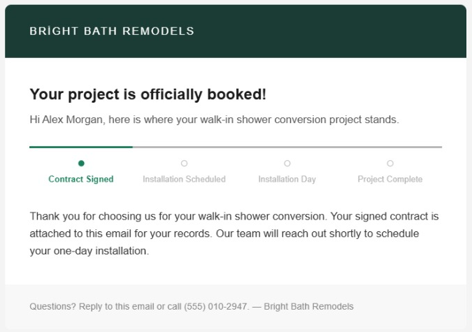
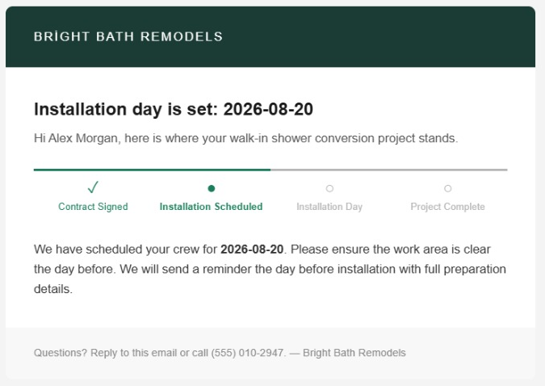
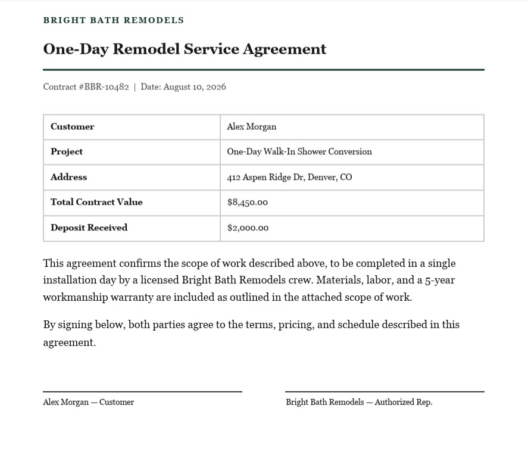
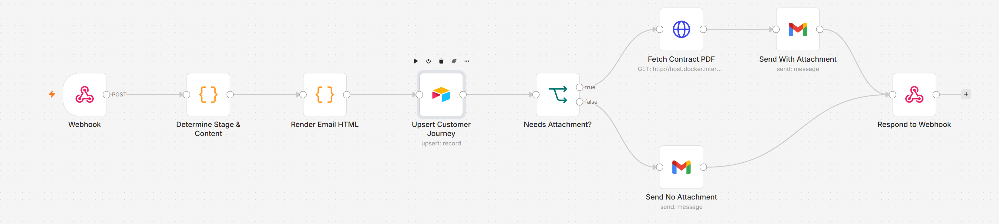
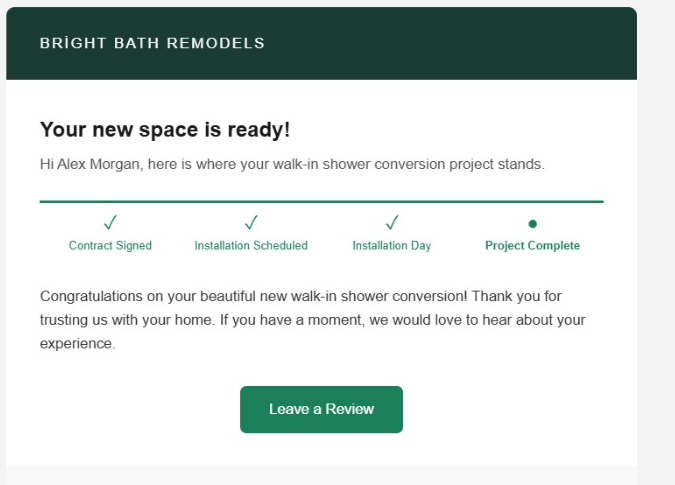
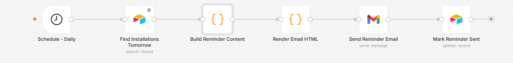

Built after seeing the same request come up across several real automation job listings: a service business (home remodeling, in the brief that prompted this) wants customers to always know where their project stands, the way Amazon's order-tracking emails do — without anyone on the team manually writing status updates. This demo is deliberately genericized rather than tied to one specific CRM: the branding, copy, and CRM field names shown here ("Bright Bath Remodels") are placeholders — every color, logo, checkpoint label, and trigger condition is meant to be swapped per client, not hard-coded.
A branded status-tracker email, not a wall of text
Each email shares one HTML template — table-based, inline-styled, so it renders consistently in Gmail and Outlook alike — with a horizontal checkpoint tracker (✓ done, ● current, ○ upcoming) that updates automatically based on which stage the customer is in. The same template renders four different moments in the journey; only the headline, body copy, and tracker position change.

The contract, attached automatically
The contract-signed email carries a PDF attachment, fetched dynamically at send time rather than pre-loaded per customer. In this demo the PDF is a generated sample; in a real deployment it would be swapped for whatever the client's CRM already produces — a signed contract from their e-signature tool, a scope-of-work export, or similar — the workflow only needs a URL to fetch from, not a specific document source.

n8n workflow: one event in, the right email out
A single webhook accepts any of the four CRM events, upserts the customer's journey record in Airtable (matched on email, so a repeat event updates the same customer instead of duplicating them), and branches only for the one case that needs a file attached. Swapping the trigger from a generic webhook to a specific CRM's real event stream is a matter of pointing it at that CRM's API — the rendering and sending logic underneath doesn't change.

A reminder that sends itself, and a close that asks for the review
A separate scheduled workflow checks daily for installations happening tomorrow and fires the reminder automatically — no one has to remember. The final email in the journey closes the loop with a review-request button, timed for the moment satisfaction is highest: right after the work is done.


Tech stack
- Automation — n8n (self-hosted via Docker), webhook + scheduled workflows, built and tested through n8n's REST API
- Email — hand-built table-based HTML template (cross-client compatible), sent via Gmail for this demo; production volume would move to a dedicated transactional provider (e.g. SendGrid, Postmark) for deliverability and sender reputation — the template and trigger logic stay identical either way
- CRM substitute — Airtable, tracking each customer's current stage, installation date, and reminder status
- Documents — dynamic PDF attachment fetched at send time, swappable for any client's real contract source
What it demonstrates
- Designing for reuse, not one client — branding, copy, and trigger conditions are all swap points, not hard-coded assumptions
- Thinking past the demo to production — knowing where a personal inbox stops being the right tool and a transactional email service starts
- Cross-client-compatible HTML email design (table layouts, inline CSS) — a skill most automation-only builds skip entirely
- Event-driven CRM integration that treats the specific CRM as a swappable trigger source, not the architecture itself